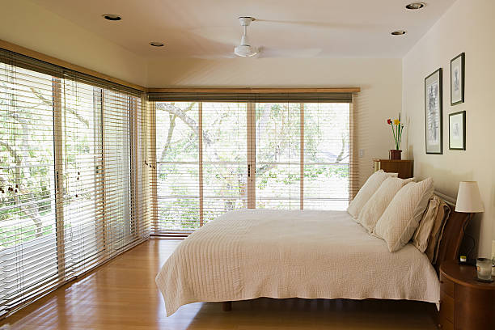

USA - Nationwide
info@deliwindowsblinds.xyz
USA - Nationwide
info@deliwindowsblinds.xyz

Got broken blinds? Our expert window blinds repair services can restore your blinds to their original condition quickly and efficiently.
Revive your blinds with our premium window blinds repair services! Our skilled technicians in Usa - Nationwide restore functionality and style effortlessly. Request a quote today!
Residential & commercial Windows Blinds
Quality services at affordable prices
Immediate 24/ 7 emergency services


In today's world, ensuring your home's comfort and aesthetics goes hand in hand with choosing the right window treatments. Residential window blinds play a vital role in offering privacy, controlling light, and achieving a stylish look that complements your décor. At our company, we provide an extensive range of options, from traditional to modern styles, ensuring you find the ideal solution that aligns with your vision.
Our selection of window blinds includes a variety of materials, colors, and designs to suit any room in your home. Whether you are looking for elegant wooden blinds for your living room, chic faux wood blinds for a cost-effective alternative, or stylish roller blinds for your bedroom, we have it all. What sets our services apart is our commitment to customization. We believe that every home is unique and should reflect the personality of its owners. Our team works closely with you to select the right materials, colors, and styles that resonate with your preferences.
Choosing us means not only gaining access to high-quality products but also benefiting from our expert installation services. Our professional team understands the nuances of window treatments and ensures every installation is perfect, optimizing both aesthetics and functionality. We pride ourselves on providing a seamless installation experience, minimizing disruption to your daily routine.
Additionally, we recognize that affordability is key. We leverage our industry connections to offer you competitive pricing on a wide range of quality window blinds. Our customers can enjoy top-tier products without stretching their budgets.
When you choose our residential window blinds services, you can expect exceptional customer service. Our knowledgeable team is always available to answer questions and provide guidance throughout your buying journey. Whether you need advice on selection or assistance with installation, we are here to help.
Lastly, we consider energy efficiency in our offerings. Many of our window blinds are designed to minimize heat gain in the summer and retain warmth during winter, helping you lower those energy bills. By opting for our energy-efficient window treatments, you contribute to sustainable living while enhancing your home's comfort.

Every home deserves a touch of personalization, and custom window blinds installation allows you to tailor your window treatments to your unique taste and requirements. Our company specializes in providing bespoke solutions that fit your specific windows' dimensions, style, and functionality needs seamlessly.
We understand that choosing the right blinds can be overwhelming, given the wide variety of options available. That’s why our team of design experts is here to guide you every step of the way. From the initial consultation to the final installation, we focus on understanding your preferences and needs, helping you curate a selection of options that reflect your personal style.
At the heart of our service is the promise of quality. We source our materials from trusted manufacturers, ensuring that your custom window blinds are durable and stylish. Whether you prefer luxurious fabric shades, practical vinyl blinds, or elegant wooden options, we have the materials to match your vision.
The installation process is as crucial as the product itself. Our professional installers possess extensive experience and training to ensure each custom window blind fits perfectly and operates smoothly. By handling the installation with great care and precision, we ensure that your investment functions effectively and enhances your living space.
Moreover, we offer a range of modern technologies, including motorized options, which add convenience to your life. Imagine adjusting your window blinds with the touch of a button or remote control. This modern convenience is increasingly popular in homes throughout Usa - Nationwide, making your living environment easily adaptable.
What truly makes our custom window blinds installation service stand out is our dedication to affordability. We strive to keep prices competitive without sacrificing quality. Our commitment is to make custom window solutions accessible to everyone in Usa - Nationwide.
Finally, we value long-term relationships with our clients. Once you've experienced our custom window blinds installation services, we encourage you to reach out for ongoing support, maintenance, or even further customizations. Your satisfaction is our top priority!

Decorating your home doesn’t have to break the bank. Our affordable window blinds provide you with exceptional style and functionality without compromising on quality. We source our materials directly from trusted manufacturers, allowing us to pass significant savings on to you. Whether you're looking for classic, modern, or contemporary styles, our range of budget-friendly options ensures that you can achieve your desired look while keeping your finances in check. Trust us to deliver value, quality, and style all at an affordable price.

Finding the best window blinds companies in Usa - Nationwide can be a daunting task. However, our extensive experience and dedication to customer service make us stand out in a crowded market. We are committed to providing superior products and exceptional service, earning customer loyalty through our professional approach and satisfaction guarantee. Our window blinds are crafted from high-quality materials, ensuring durability and style. Choose us for your window treatment needs and see why we're considered the best in Usa - Nationwide.

Installing window blinds can be tricky, but with our professional window blinds installation services you can relax while we handle everything. Our team of specialists possesses the knowledge and skills to ensure your blinds are installed correctly and securely, maximizing their effectiveness and aesthetics. We emphasize precision and attention to detail in every installation project, which allows us to achieve stunning results that enhance your home or office. Rely on our expertise for all your window blinds installation needs.

When searching for a local window blinds store you want a reliable and accessible option. Our store is not just local; it is a hub of creativity and choice. We offer a diverse selection of window blinds tailored to suit various styles and budgets, making it easy for you to find exactly what you need. Our friendly staff is always available to assist you in selecting the right products, ensuring an enjoyable shopping experience. Experience the convenience and personal touch of shopping locally with us.

Embrace the future of convenience with motorized window blinds installation . Our motorized blinds offer a sophisticated solution to light management, allowing you to control your window coverings with just the touch of a button. Ideal for hard-to-reach windows or for those who appreciate modern technology, our motorized options enhance both the functionality and style of your home or office. Let our skilled technicians install your motorized blinds and elevate your living space effortlessly.

Selecting the right window blinds for homes in Usa - Nationwide is pivotal in creating the right atmosphere. We offer an extensive range of styles, colors, and materials that cater to every homeowner's preference. Our blinds are designed not only to beautify but also to offer privacy and light filtration. Allow us to assist you in transforming your living spaces with our expertly crafted window blinds designed to meet your specific needs.

Create a professional and productive working environment with our specialized window blinds for offices. The right window treatments can significantly impact your workspace by providing light control, privacy, and comfort.
Our selection includes everything from elegant vertical blinds to sophisticated roller shades that enhance your office's aesthetic while ensuring functionality. Our team understands the unique needs of different industries and can recommend products that boost workplace efficiency. Beyond aesthetics, our window blinds offer energy-efficient properties that can reduce your energy costs, creating a sustainable workplace.

Finding suitable blinds for sliding glass doors can be challenging, but our company has you covered. We offer stylish and functional solutions designed specifically for sliding doors, ensuring that privacy and light control do not compromise accessibility.
Our selection ranges from sheer vertical blinds to sliding panels that seamlessly fit your decor while allowing for ease of access. Our team will guide you through the selection process, helping you pick the best option that meets both practical needs and aesthetic preferences. With our expertise, you can transform your sliding glass doors into beautiful and functional features of your space.

Bring warmth and sophistication into your home with our wooden window blinds installation service. Wooden blinds are timeless, offering elegance and a natural look that can complement any interior design.
Our beautiful selection of wooden blinds is crafted from high-quality materials, ensuring durability and style. We provide professional installation, ensuring your blinds fit perfectly while enhancing your home decor. Additionally, our team offers guidance on maintenance, helping you keep your wooden blinds looking pristine for years to come.

Vertical window blinds are an ideal solution for large windows and sliding doors, offering stylish convenience while maintaining easy light control. Our company specializes in providing a variety of vertical blinds that cater to the specific needs of your spaces .
One of the standout benefits of vertical blinds is their ability to cover expansive areas effectively. They provide a sleek look while allowing you to adjust the slats for fine-tuned control over light and privacy. This adaptability makes them particularly popular for modern homes, offices, and commercial spaces.
Our selection includes numerous fabrics, colors, and patterns to choose from. Whether you're looking for something subtle to blend seamlessly with your décor or a bold color to create a stunning focal point, our extensive inventory has something to suit every taste and style.
Maintenance of vertical blinds is straightforward, making them a practical choice for busy households and workplaces. Our products are designed to be durable and easy to clean, ensuring that your window treatments look fresh all year round.
Our professional team in Usa - Nationwide not only offers an impressive selection but also assists with installation. Vertical blinds require specific mounting techniques to operate efficiently, and our skilled installers ensure everything is fitted securely and correctly. This attention to detail results in blinds that function beautifully and stand the test of time.
Moreover, we understand how critical energy efficiency is for both homes and businesses today. Vertical blinds can help reduce heat gain and loss, making them an excellent option for eco-conscious consumers. This solution contributes to a comfortable living or working environment while potentially lowering energy bills.
We take pride in our reputation for exceptional customer service. From the initial consultation through the final installation, we prioritize communication and transparency. Our knowledgeable team is available to answer questions, offer design advice, and provide post-installation support.
Choosing vertical window blinds means selecting a versatile, stylish solution for your window treatment needs . Our team is dedicated to ensuring your experience is exceptional from start to finish, providing you with beautiful window solutions that enhance your space.

Faux wood window blinds deliver the charm of real wood without the high maintenance and cost. Ideal for humid environments like kitchens and bathrooms, these blinds are resistant to moisture and easy to clean. Our faux wood window blinds come in various finishes and styles, making them a versatile choice for any room. Let our experienced installers ensure a perfect fit, allowing you to enjoy the beauty and practicality of these durable window treatments while benefiting from our exceptional service and warranty.

Enjoy privacy and darkness in your home with our affordable blackout blinds. Perfect for bedrooms or media rooms, our blackout options are designed to block out light effectively, allowing for restful sleep or uninterrupted movie nights. Our blackout blinds combine functionality with affordability; you can achieve the desired level of darkness without breaking the bank. Plus, our skilled team delivers seamless installation, ensuring that they operate smoothly and enhance your home’s comfort.

Roller window blinds are synonymous with style and simplicity. They effortlessly blend functionality with aesthetics, making them a popular choice for homeowners throughout Usa - Nationwide. Our company specializes in roller window blinds installation, providing a range of styles and colors to suit any décor.
One of the most significant advantages of roller blinds is their versatility. They are suitable for any room in your home, from living areas to bedrooms and kitchens. The streamlined design allows for maximum light control while maintaining a modern appearance, making them an excellent choice for those who appreciate minimalism.
Our roller blinds come in various fabric choices, including light-filtering, room darkening, and blackout options. This selection enables you to customize the light control in your space, whether you want soft ambient light or complete darkness. Our knowledgeable team is here to assist you in selecting the right type of roller blinds that meet your requirements.
When it comes to installation, our experienced technicians are dedicated to making the process efficient and straightforward. Proper installation is crucial for rolling blinds to operate smoothly, and our team ensures that everything is fitted correctly so you can enjoy these stylish window treatments fully.
In addition to their good looks and practicality, roller blinds are generally low-maintenance. They can be cleaned easily using a damp cloth, ensuring they remain pristine and stylish for years. This feature makes them ideal for busy households and adds to their widespread appeal.
Our competitive pricing ensures that roller window blinds are accessible to all homeowners . We work diligently to provide exceptional value without compromising on quality, offering stylish products tailored to meet your budgetary needs.
Customer service is at the forefront of our business model. From the moment you reach out to us, we prioritize open communication and personalized assistance. We believe in making the entire experience enjoyable, from consultation and selection through to installation and beyond.
Enhance your home with our beautiful roller window blinds installation in Usa - Nationwide. Our focus is on providing you with quality products, skilled installation, and excellent service, making your window treatment journey seamless and satisfying.

When you search for the best window coverings near me in Usa - Nationwide, our company stands out for its diverse selection and unmatched quality. We offer a comprehensive array of window treatments that cater to both residential and commercial needs. Our expertise lies in understanding customer preferences and providing tailored solutions, ensuring you receive not only the best products but also exceptional service. Explore our range and discover why we are the top choice for window coverings in the area.

Elevate your interior with our custom shades and blinds tailored to your exact specifications. You deserve window treatments that not only fit perfectly but also reflect your personality and style. Our dedicated team works closely with you to understand your needs, offering an array of materials, colors, and styles.
From elegant roman shades to functional roller blinds, our selection caters to all tastes. We ensure each product is crafted with precision and care to meet your requirements. Our professional installation service guarantees a seamless fit, enhancing the beauty and functionality of your windows. With our commitment to quality and service, designing your perfect window solution has never been easier.

Installing new window blinds is a perfect way to upgrade the aesthetics of your home and enhance its functionality. At our company, we specialize in home window blinds installation providing a wide range of options that cater to various styles and preferences.
Whether you're looking for classic wooden blinds for a traditional feel or modern roller shades that lend a contemporary look, our extensive selection ensures you'll find the perfect match for your home. Our products are selected for their quality, style, and ease of use.
Our professional installation service is one of the hallmarks of our business. Our experienced team understands the intricacies of installing various window treatment types. Correct installation is crucial for ensuring your blinds function correctly and appear visually appealing in your living space. We take the time to measure accurately and fit the blinds seamlessly, minimizing disruption to your home.
In addition to installation, we are dedicated to providing expert advice to help you select the right blinds that suit your needs. Our knowledgeable team is here to guide you through choices based on aesthetics, functionality, and energy efficiency.
We prioritize transparency in our pricing. Once you choose your preferred window treatments, we provide a clear, upfront quote that includes all aspects of the installation process. With us, there are no hidden fees, only honest service that respects your budget.
Customer satisfaction is our primary goal. We are committed to ensuring you are delighted with your new home window blinds from selection through installation. Our dedication to communication means that you will always know what to expect.
After your blinds are installed, our commitment doesn’t stop there. We are available for any questions or guidance you may need, ensuring your window treatments continue to function beautifully for years to come.
Elevate your living spaces with our professional home window blinds installation . Allow us to help you transform your home with functional, beautiful window solutions that enhance your quality of life.

Understanding the window blind installation cost is crucial when planning your home improvement budget. In Usa - Nationwide, we pride ourselves on providing competitive pricing without compromising on quality. Our transparent pricing structure ensures you know exactly what you’re paying for, including installation, materials, and any additional services you might need. Contact us for a detailed consultation and estimate that considers your specific requirements, so you can enjoy the benefits of new blinds knowing you made a wise investment.

Maintaining clean window blinds is vital not only for aesthetics but also for extending the life of your treatments. Our professional window blind cleaning services in Usa - Nationwide effectively remove dust, allergens, and grime from all types of blinds. We utilize specialized cleaning solutions and equipment that ensure a deep clean without damaging your window treatments. Regular cleaning helps maintain your blinds’ functionality and enhances their appearance, making us your best choice for reliable and efficient cleaning services.

Choosing energy-efficient window blinds is essential for reducing utility bills and enhancing comfort in your home or office. Our selection features a range of blinds designed to minimize heat gain in summer and retain warmth during winter, effectively improving your property’s energy performance. Our knowledgeable staff can guide you through the features of various options, ensuring you select the best energy-efficient solutions for your needs. Choose us for quality products that help you save money while creating a more comfortable environment!

In today’s energy-conscious world, solar window blinds offer an innovative solution to maximize natural light while minimizing heat gain. Our company specializes in solar window blinds installation providing stylish and efficient options for energy savings and comfort in your home or office.
Solar blinds are designed with advanced materials that filter sunlight, reducing glare without completely blocking the view. This feature makes them ideal for spaces where you want to maintain a connection to the outdoors while managing light and heat effectively.
Our selection of solar window blinds comes in various styles and colors, allowing you to choose options that match your décor while providing the desired functionality. Whether you prefer sleek roller shades or elegant panel systems, we have the perfect solution tailored to your aesthetic preferences.
The benefits of choosing solar window blinds extend beyond aesthetics. These blinds play a crucial role in improving energy efficiency by reducing reliance on artificial lighting during the day, ultimately decreasing your overall energy consumption.
Professional installation of solar window blinds is essential for optimal performance. Our experienced technicians understand the nuances of these products and ensure that they are fitted correctly, providing effective light control and reliable operation.
In addition to installation, we provide consultations to guide you in selecting the best solar blinds for your needs. Our team is knowledgeable about the latest advancements in solar window treatments and can help you understand the features and benefits of each option.
We pride ourselves on our commitment to customer service. From the initial consultation through the final installation, our goal is to ensure a smooth and enjoyable experience. We provide transparent pricing with no hidden fees, ensuring you know exactly what to expect.
Harness the power of the sun with our solar window blinds installation . Let us help you transform your living spaces with functional, energy-efficient solutions that enhance both comfort and style.

An organized and attractive workspace can enhance employee productivity and wellness. Our office window blinds installation services in Usa - Nationwide combine style and function, offering products designed to meet the unique demands of any professional environment. From office cubicles to conference rooms, we supply and install blinds that provide excellent light control and privacy while being easy to maintain. Our professional team is committed to delivering timely installation, ensuring your blinds are fitted correctly to enhance your workplace aesthetics.

Located conveniently in Usa - Nationwide, our local blinds and shades store is your go-to destination for all your window treatment needs. Our commitment to quality products and exceptional customer service sets us apart in the community. Whether you’re looking for stylish blinds or functional shades, our local store offers a wide selection tailored to suit any type of residential or commercial space.
One of the benefits of shopping at a local store is the personalized service you receive. Our knowledgeable team is always ready to assist you in selecting the right window treatments that match your specific needs and preferences. We understand that the right blinds or shades can significantly impact your home or office’s aesthetics and functionality.
At our store, you can explore a variety of window treatment options firsthand. We offer an extensive selection of materials, colors, and styles, including roller shades, wooden blinds, vertical blinds, and more. This hands-on experience allows you to see and feel the products, giving you confidence in your purchase decisions.
Moreover, we pride ourselves on being part of the Usa - Nationwide community. Our local store fosters relationships with our customers, allowing us to understand the unique styles and preferences of our neighborhood. We are committed to ensuring that our product offerings reflect local tastes and trends.
In addition to selling blinds and shades, we also provide professional installation services. Our skilled technicians ensure that your new window treatments are fitted correctly and operate smoothly, providing maximum functionality while enhancing aesthetics.
Affordability is a priority in our local blinds and shades store. We believe that quality window treatments should be accessible to everyone, which is why we offer competitive pricing and regular promotions on select products.
Visit our local blinds and shades store today, and let us help you transform your spaces with beautiful, functional window solutions tailored to your needs. Experience the difference personalized service can make when selecting the perfect window treatments.
USA - Nationwide Windows Blinds Pros
(888) 912-1629
info@deliwindowsblinds.xyz
09.00 AM - 09.00 PM
09.00 AM - 12.00 PM